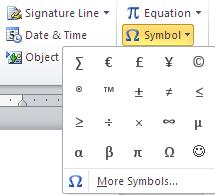
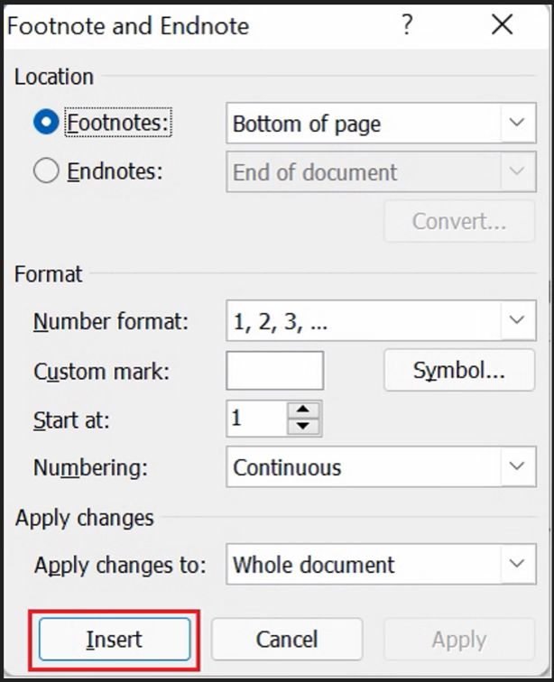
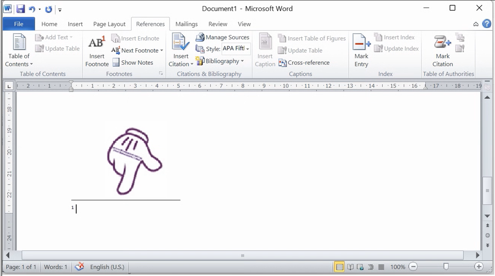

Bước 2: Trên thanh Ribbon, chọn thẻ Insert, chọn lệnh tương ứng với đối tượng cần chèn tương ứng
Bước 3: Thực hiện các thao tác chèn đối tượng đã chọn
Bước 4: Hiệu chỉnh, định dạng đối tượng vừa chèn (nếu cần) sử dụng thẻ lệnh tương ứng
Chú ý: Thẻ lệnh tương ứng với đối tượng chỉ xuất hiện sau khi chọn đối tượng
Chèn ký tự và biểu tượng đặc biệt
+, ∝, β, π, ω, …
+ Đặt con trỏ soạn thảo tại vị trí cần chèn -> Chọn Insert/ Symbol -> Chọn ký hiệu phù hợp.

Chèn công thức toán
Bước 1: Insert/Symbol/Equation ->Xuất hiện bảng chọn
Bước 2: Nháy chọn 1 công thức có sẵn trong bảng chọn, hoặc nhấp chọn lệnh Insert New Equation
Bước 3: Soạn thảo công thức sử dụng công cụ Equation/Design
Chèn hình ảnh
Chèn hình ảnh từ File ảnh trên ổ đĩa
Để chèn một File ảnh từ ổ đĩa cứng vào văn bản bạn thực hiện theo các bước sau đây:
Bước 1: Nhấp trỏ chuột tại vị trí cần chèn File ảnh vào văn bản.
Bước 2: Từ thanh công cụ nhấp chọn Tab Insert, tìm tới nhóm Illustrations, nhấp chọn biểu tượng Picture.
Cửa sổ Insert Picture xuất hiện bạn tìm tới File ảnh cần chèn vào văn bản, nhấp chọn File này rồi nhấn nút Insert.
Hình ảnh vừa chọn sẽ được chèn vào văn bản tại vị trí đã chọn.
Bước 3: Tùy chỉnh hình ảnh trên văn bản: Thông thường khi chèn một hình ảnh vào văn bản chương trình sẽ tự động định nghĩa một số thuộc tính. Tuy nhiên đề phù hợp với nội dung bạn hoàn toàn có thể thay đổi những thuộc tính này.
Chèn Online Picture
OnlinePicture thực chất là các hình ảnh được Microsoft Word cung cấp sẵn với nhiều chủ đề khác nhau, nếu như bạn không có ảnh phù hợp cho nội dung văn bản thì hãy thử tìm kiếm trong thư viện Online Picture cửa Microsoft Word xem sao? Để chèn các OnlinePicture vào văn bản hãy nhấp chọn biểu tượng Online Picture trong nhóm lệnh Illustrations và máy tính có kết nối internet.
– Bạn nhập chủ đề hình ảnh tìm kiếm để tìm kiếm trong thư viện hình ảnh của microsoft office word.
– Bạn nhập chủ đề hình ảnh tìm kiếm để tìm kiếm trên mạng internet.
Sau khi chèn online picture vào văn bản, các thao tác với những hình ảnh này tương tự như ở phần trước.
Chèn hình vẽ
Bước 1:Đầu tiên để viết được chữ lên hình vẽ thì bạn phải vẽ 1 hình trước vào Word.
Chọn thẻ Insert > Đi đến phần Illustrations > Chọn Shapes > Chọn kiểu hình bạn muôn vẽ.
Bước 2:Di chuyển chuột đến vị trí muốn vẽ > Nhấn giữ và kéo chuột để vẽ hình.
Bước 3:Sau khi đã có hình vẽ bạn có thể tùy chọn các màu sắc cho hình ở thẻ Format > Mục Shape Styles.
Trong đó:
Shape Fill: Tô màu nền cho hình vẽ.
Shape Outline: Tô màu viền ngoài cho hình vẽ.
Shape Effects: Tạo hiệu ứng cho hình vẽ như 3D, đổ bóng mờ,...
Bước 4: Để viết chữ lên hình bạn click chuột phải vào hình vẽ > Chọn Add Text.
Bước 5:Viết chữ bạn muốn vào hình vẽ và đây là kết quả sau khi đã viết chữ lên hình vẽ trong Word.
Bước 1: trên thanh Ribbon, nháy chọn Insert/Text/WordArt, Nháy chọn 1 mẫu chữ trong bảng
Bước 2: nhập Nội Dung
Bước 3: Sử dụng thanh công cụ
Drawing/ Format để hiệu chỉnh chữ
Chèn biểu đồ
Bước 1: Nhấn chọn Insert/ ustrations/ Chart, xuất hiện hộp thoại Insert Chart
Bước 2: Chọn 1 mẫu biểu đồ trong hội thoại Insert Chart -> OK
Bước 3: nhập dữ liệu cho đồ thị trong trang bảng tính Excel
Bước 4 sử dụng thanh công cụ chart để hiệu chỉnh biểu đồ cho phù hợp
Chèn hộp văn bản
Các bước thực hiện:
Bước 1: Nhấp chọn lệnh Textbox trong thẻ Insert
Bước 2 chọn mẫu Textbox có sẵn trong danh sách hoặc chọn draw Text Box
Bước 3 nhập nội dung cho Textbox
Bước 4: định dạng cho Textbox trên thẻ Format (drawing tools)
Chèn bảng biểu
Các thao tác làm việc với bảng:
Chèn bảng: Insert/ Table
Thao tác trên bảng
Chèn Xóa dòng cột ô
Thay đổi kích thước dòng và cột
Hòa nhập ô, tách ô, tách bảng
Thêm hoặc xóa một đường kẻ trong bảng
Thêm bảng, màu nền cho ô, dòng cột
Căn lề ô, dòng, cột
Chia ô, góc (tiêu đề) trong bảng theo đường chéo
Định dạng bảng
Các phép tính đơn giản trong bảng
Sắp xếp dữ liệu trong bảng
Thẻ Table Tool/ design
Thẻ table Tool/ Layout
Sắp xếp dữ liệu trong bảng
Sắp xếp các hàng trong bảng theo một cột nào đó
Dữ liệu trong cột có cùng một kiểu: text, number or Date
Nếu dữ liệu ở các hàng trong một cột khác kiểu thì chỉ được sắp xếp theo kiểu Text
Các bước Sắp xếp dữ liệu
Bước 1 Chọn các hàng cần sắp xếp
Bước 2: Dùng lệnh table Tools/ Layout/ Sort
Chọn cột cần sắp xếp
Chọn sắp xếp theo kiểu dữ liệu nào: text, number or date
Chọn thứ tự sắp xếp:
+ Ascending: tăng dần
+ Descending giảm dần
Chú ý:
Khi tiêu đề có chọn ô thì không chọn tiêu đề
Nếu 2 dòng bằng nhau trên cột tại ô “Short by” thì sẽ sắp xếp theo cột tại ô Then by
Chèn chú thích chân trang
Bước 1: Tại giao diện nội dung văn bản Word cần chèn chú thích dưới chân trang, bạn đặt con trỏ chuột ngay sau từ ngữ cần chú thích.
Bước 2: Tiếp đến, chúng ta sẽ chọn tab References trên thanh Ribbon rồi kích vào mũi tên tại mục Footnotes. Nếu bạn đang sử dụng Word 2003 thì chọn Insert > Reference > Footnote.
Bước 3: Sau đó xuất hiện giao diện cửa sổ Footnote and Endnote.
Trong đó gồm:
– Location: Vị trí đặt ghi chú:
+ Footnote: Chân trang (thường để ghi chú ở chân trang).
+ Endnotes: Đặt ở vị trí dưới cùng của file văn bản.
– Format: Định dạng.
+ Number format: Định dạng kiểu đánh số ghi chú (1, 2, 3...; a, b, c...; i, iii, iii,...)
+ Custom mark: Tự nhập ký tự làm ký tự ghi chú.
+ Start at: Bắt đầu đánh số thứ tự cho chú thích.
+ Numbering:
+ Continuous: Chú thích từ đầu tới cuối trang
+ Restart each section: Chú thích liên tục từ đầu đến cuối phần văn bản chọn và bắt đầu lại từ đầu khi chọn phần văn bản khác.
– Nút Symbol...: Chèn ký tự đặc biệt làm ký tự đánh ghi chú.
– Apply changes: Whole document chú thích toàn bộ trong nội dung văn bản.
Chúng ta điều chỉnh như hình dưới đây rồi nhấn Insert.

Ngay sau đó, ở cuối chân trang sẽ xuất hiện chú thích như hình dưới đây.

Bước 4: Cuối cùng bạn chỉ cần viết nội dung chú thích vào phía dưới chân trang là được. Chúng ta có thể thay đổi kích cỡ chữ, phông chữ cho chú thích tùy theo từng nhu cầu trình bày của mỗi người.